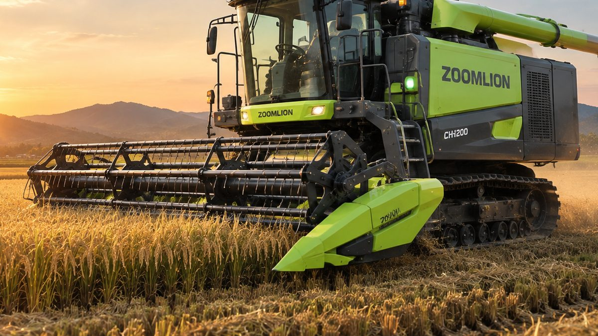

Tanam Tiga Kali Setahun, Combine Harvester Makin Sibuk: Ini Cara Merawatnya
Jeda panen dan tanam yang makin singkat membuat combine harvester bekerja lebih sering. Perawatan rutin jadi kunci agar tetap awet.
Three Plantings a Year Keep Combine Harvesters Busy: Here's How to Maintain Them
Shorter gaps between harvest and planting mean combine harvesters work more often. Routine maintenance is the key to keeping them running.
一年三季种植，联合收割机更忙碌：保养方法看这里
收获与播种间隔越来越短，联合收割机的使用频率随之增加。定期保养是延长使用寿命的关键。

Pemerintah terus mendorong peningkatan indeks pertanaman padi, dari dua kali menjadi tiga kali tanam dalam setahun. Salah satu caranya, jeda antara panen dan tanam kembali ditargetkan tidak lebih dari 14 hari.
Artinya, combine harvester akan bekerja lebih sering dengan waktu istirahat yang lebih singkat. Tanpa perawatan yang baik, risiko mesin rusak di tengah musim panen ikut naik.
Setelah Setiap Pemakaian
Bersihkan dari Jerami, Lumpur, dan Debu
Bersihkan seluruh bagian mesin, terutama area pemotong, saringan, dan roda crawler. Kotoran yang menumpuk bisa menyebabkan karat, mengganggu sistem pendingin, dan mempercepat keausan komponen.
Periksa Filter
Bersihkan filter udara setelah bekerja, atau ganti jika sudah terlalu kotor.
Cek Sabuk dan Rantai
Periksa tegangan sabuk dan pastikan tidak ada yang retak atau aus. Lumasi rantai secara rutin agar tidak berkarat.
Periksa Track Karet
Bersihkan lumpur dan batu yang terselip di track. Periksa juga tegangan track dan kondisi karetnya, karena track yang terlalu kendur lebih mudah lepas saat berbelok di lahan berlumpur.
Periksa Pisau Potong
Pisau yang tumpul atau patah membuat potongan tidak rapi dan menambah beban mesin. Segera ganti bila perlu.
Sebelum Disimpan Lama
Lumasi semua bagian yang bergerak, lalu simpan mesin di tempat yang teduh, kering, dan bebas genangan air. Jika terpaksa di ruang terbuka, gunakan penutup untuk melindungi mesin dari hujan dan panas.
Untuk aki, lepaskan kabelnya atau jaga dengan pengisi daya lambat agar tidak soak saat mesin lama tidak dipakai.
Kesimpulan
Semakin sering combine harvester dipakai, semakin penting perawatan rutinnya. Beberapa menit untuk membersihkan dan memeriksa mesin setelah bekerja jauh lebih murah daripada kerusakan di tengah musim panen.
Sedang mencari combine harvester? PT Diesel Agri Sukses Sejahtera adalah distributor resmi combine harvester Zoomlion seperti ZL88 dan ZL105.
Butuh saran? Hubungi kami.
Sumber: Republika, Kementerian Pertanian, Pustaka Kementan, Niagakita, Nongyou Machinery.
The government keeps pushing to raise the rice cropping index from two to three plantings a year. One of the targets is a gap of no more than 14 days between harvest and replanting.
That means combine harvesters work more often with less downtime. Without good maintenance, the risk of a breakdown in the middle of harvest season goes up.
After Every Use
Clear Out Straw, Mud, and Dust
Clean the whole machine, especially the cutting area, screens, and crawler tracks. Built-up dirt can cause rust, interfere with the cooling system, and speed up component wear.
Check the Filters
Clean the air filter after each job, or replace it if it is too dirty.
Check Belts and Chains
Check belt tension and make sure none are cracked or worn. Lubricate chains regularly so they do not rust.
Inspect the Rubber Tracks
Remove mud and stones stuck in the tracks. Also check track tension and the condition of the rubber, since a loose track is more likely to come off when turning in muddy fields.
Check the Cutter Blades
Blunt or broken blades leave an untidy cut and add load to the machine. Replace them when needed.
Before Long-Term Storage
Lubricate all moving parts, then store the machine somewhere shaded, dry, and free of standing water. If it has to stay outdoors, use a cover to protect it from rain and heat.
Disconnect the battery or keep it on a trickle charger so it does not go flat while the machine is idle.
Conclusion
The more often a combine harvester is used, the more important routine maintenance becomes. A few minutes of cleaning and inspection after work costs far less than a breakdown mid-harvest.
Looking for a combine harvester? PT Diesel Agri Sukses Sejahtera is the authorised distributor of Zoomlion combine harvesters such as the ZL88 and ZL105.
Need advice? Contact us.
Sources: Republika, Kementerian Pertanian, Pustaka Kementan, Niagakita, Nongyou Machinery.
印尼政府持续推动将水稻复种指数从一年两季提高到一年三季，其中一项目标是收获与再次播种的间隔不超过14天。
这意味着联合收割机的作业更频繁、休整时间更短。如果保养不到位，在收获季中途发生故障的风险也会增加。
每次作业后
清除秸秆、泥土和灰尘
清洁整台机器，尤其是割台、筛网和履带部位。堆积的污物会导致生锈、影响冷却系统，并加快部件磨损。
检查滤清器
作业后清洁空气滤清器，过脏时应及时更换。
检查皮带和链条
检查皮带张紧度，确认没有开裂或磨损。定期润滑链条，防止生锈。
检查橡胶履带
清除卡在履带中的泥块和石子。同时检查履带张紧度和橡胶状况，履带过松时在泥田转弯容易脱落。
检查割刀
割刀变钝或断裂会导致割茬不齐，并增加机器负荷。必要时请及时更换。
长期存放前
为所有运动部件加注润滑，并将机器存放在阴凉、干燥、无积水的地方。如必须露天停放，请用防护罩遮挡雨水和阳光。
对于蓄电池，请断开接线或使用涓流充电器维护，以免长期停放时亏电。
结论
联合收割机使用越频繁，定期保养就越重要。作业后花几分钟清洁和检查，远比收获季中途停机的损失小得多。
正在寻找联合收割机？ PT Diesel Agri Sukses Sejahtera 是ZL88、ZL105等中联重科联合收割机的授权经销商。
需要建议？联系我们。
资料来源： Republika, Kementerian Pertanian, Pustaka Kementan, Niagakita, Nongyou Machinery.